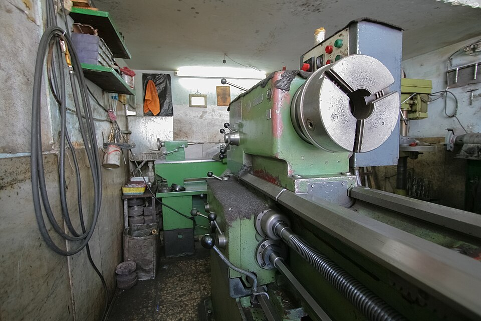
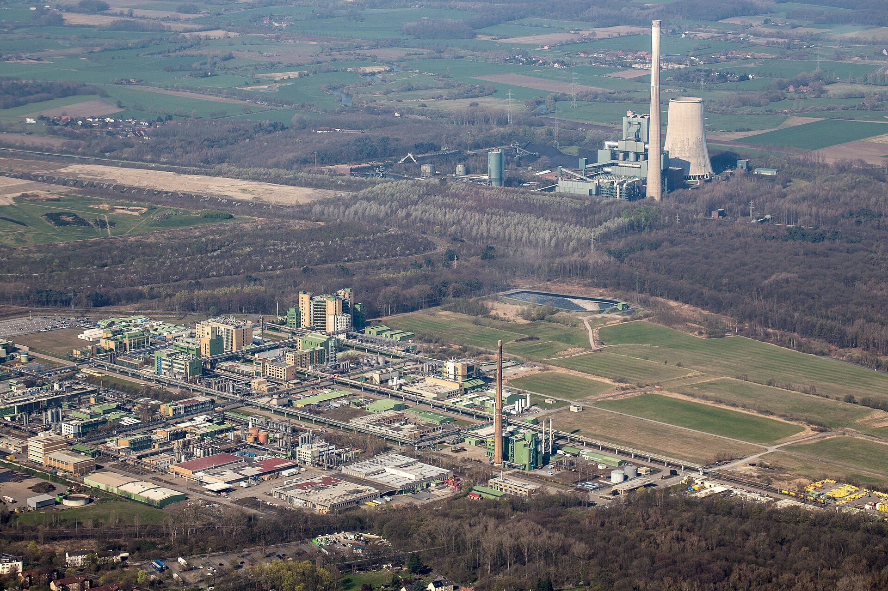
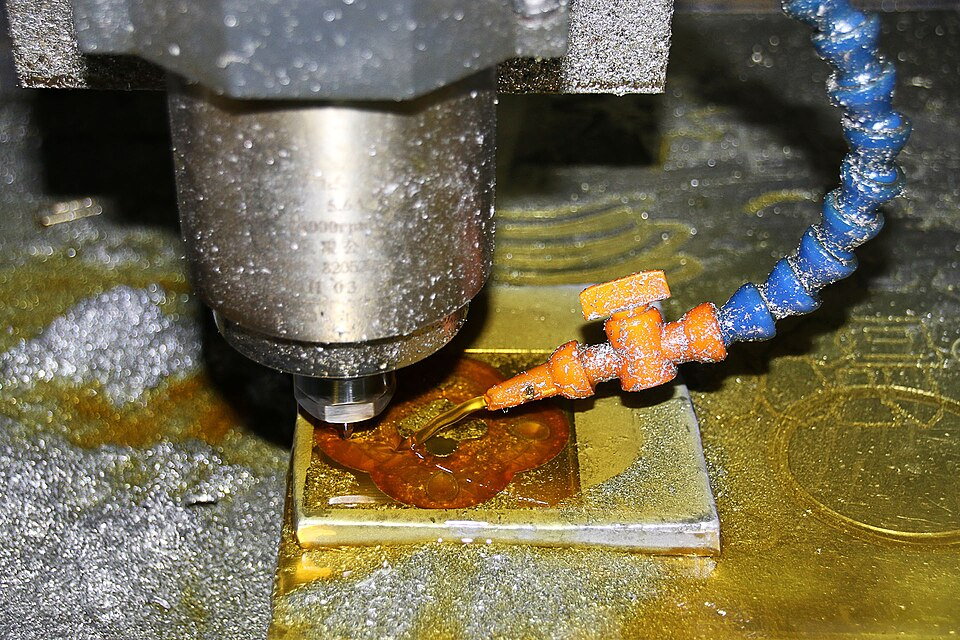
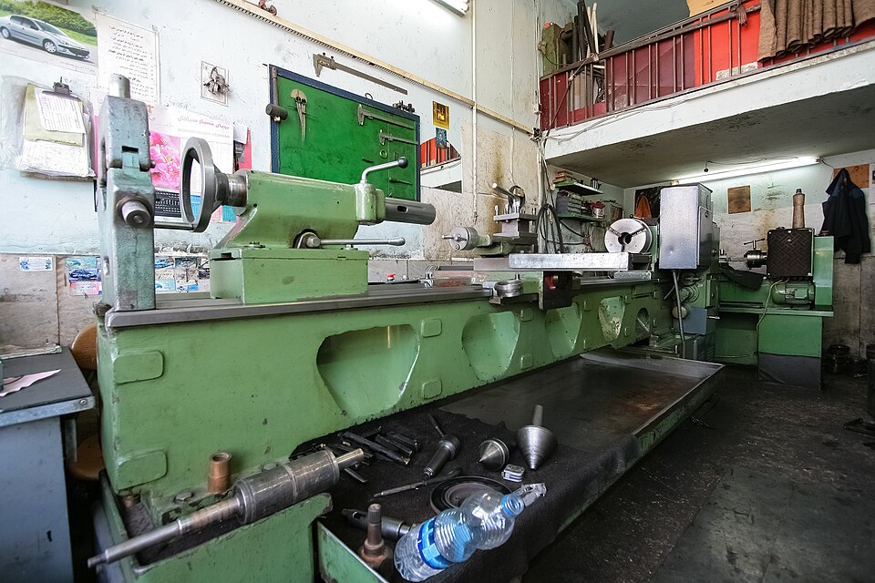
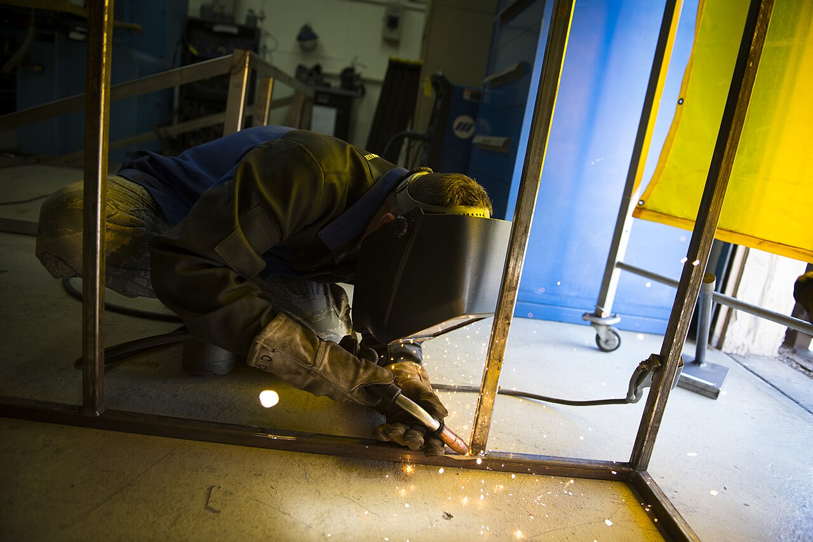
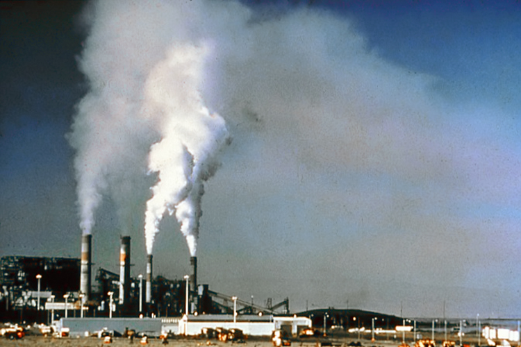
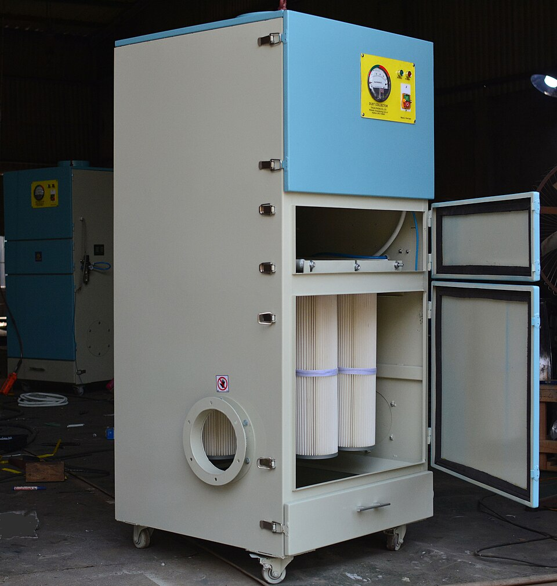

MACHINE-SIDEEQUIPMENT DISCUSSION
Machine-side collection
Review a collector arrangement for a specific machine and its operating conditions.
Ask about this application ↗
Discuss mist collection for your machine tools and manufacturing process. APZEM starts with the operation, where the mist forms, and the conditions around the machine.

APPLICATION / 01MetalworkingTalk about mist produced during machining ↗
APPLICATION / 02Machine toolsReview enclosure, openings and connection points ↗
APPLICATION / 03Manufacturing linesDiscuss individual machines or work cells ↗
APPLICATION / 04Plant environmentsBring site layout and operating details ↗Share the process and machine details with APZEM. We can help identify what information is needed to discuss equipment fit.

MACHINE-SIDEReview a collector arrangement for a specific machine and its operating conditions.
Ask about this application ↗
FILTERINGDiscuss the mist, process fluid, duty cycle and site expectations with our team.
Discuss your process ↗Bring machine layout, available space and connection details for an initial discussion.
Plan a consultation ↗A simple project journey keeps the real application at the centre of every conversation.
Describe the process, material or fluid, and where mist appears.
Share machine, operating schedule, space and connection details.
Talk with APZEM about relevant equipment and the next steps.
Clarify the information needed for a site-specific proposal.
Send a few details about your process. Our team can help start a focused discussion.
CALL APZEM+91 97890 66648EMAILsales@apzem.com